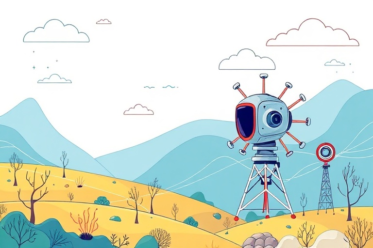

A Beginner's Guide to Practical Artificial Intelligence Tools

Category: ai | Language: enArtificial intelligence, often shortened to AI, might sound like a concept from a science-fiction movie, but it has quickly become a normal part of daily life. At its core, AI refers to software programs that can analyze information, recognize patterns, and perform tasks that traditionally required human intelligence. Today, you do not need to be a programmer or an engineer to benefit from these advancements. Accessible tools are now widely available on computers and smartphones, helping everyday users save time, organize their thoughts, and learn new skills.
One of the most popular categories of modern AI is the conversational text assistant. Applications such as ChatGPT, Microsoft Copilot, and Google Gemini act as interactive helpers that can understand and generate natural human language. Beginners can use these assistants to draft clear emails, summarize dense articles, translate foreign phrases, or brainstorm gift ideas. Instead of spending hours staring at a blank screen, you can type a simple question and receive a structured, helpful response in seconds.
Beyond written text, visual AI tools have made graphic design and image creation accessible to anyone. Platforms such as Canva, DALL-E, and Adobe Firefly allow users to generate custom artwork, restore old photos, and build presentations simply by typing descriptive instructions known as prompts. For example, asking for a watercolor landscape or a modern social media banner can yield high-quality visual results almost instantly. These capabilities empower students, small business owners, and hobbyists to express their ideas visually without needing specialized artistic software.
Productivity applications have also embraced AI to streamline repetitive daily routines. Transcription services can listen to recorded meetings, lectures, or interviews and automatically produce organized notes with key highlights. Meanwhile, intelligent writing tools check spelling, grammar, and tone in real time to ensure your written communication is polished and professional. By handling tedious administrative chores, these tools free up valuable time for more important, creative thinking.
To get the best results from artificial intelligence, beginners should focus on providing clear, detailed instructions. AI tools rely heavily on context, so specifying the intended audience, desired format, and tone will consistently produce better answers. It is equally important to remember that AI is not infallible; software can occasionally generate inaccurate information with complete confidence. Treating AI outputs as helpful first drafts that require human review and fact-checking ensures your final work remains accurate and trustworthy.
Ultimately, artificial intelligence is best viewed as a digital assistant designed to support human capability rather than replace it. You do not need to learn dozens of complex systems all at once; starting with a single free tool to help with one specific task is the easiest path forward. As you become comfortable interacting with these technologies, you will discover simple ways to make your daily work, studies, and personal projects significantly more efficient.